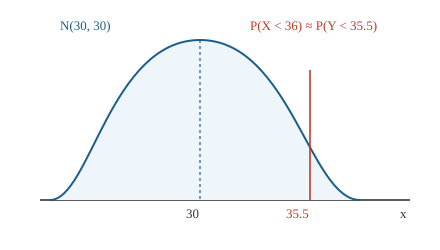

Based on Cambridge International AS & A Level Mathematics: Probability & Statistics 2 Coursebook, Chapter 2, printed pp.40–42 (the normal approximation when the Poisson parameter is large, and the continuity correction). Printed pages were read from S2.pdf (printed 40–42 = PDF 52–54). Own wording and new numbers. Teaching stops before 2.5 Hypothesis testing with the Poisson distribution on printed p.43.
Key words: normal approximation to the Poisson distribution, continuity correction, Poisson distribution
A Poisson distribution with a large parameter \(\lambda\) is well approximated by a normal distribution with the same mean and the same variance. This is the normal approximation to the Poisson distribution: if \(X\sim\mathrm{Po}(\lambda)\) and \(\lambda\) is large, then \(X\) is approximately \(\mathrm{N}(\lambda,\lambda)\).
Because a Poisson variable is discrete and a normal variable is continuous, a continuity correction is used. The event \(X\lt k\) is replaced by \(Y\lt k-0.5\), and the event \(X\leqslant k\) is replaced by \(Y\lt k+0.5\), where \(Y\) is the approximating normal variable.

Book: identifying the approximating normal distribution, printed pp.40–41. New numbers.
The random variable \(X\) has the distribution \(\mathrm{Po}(50)\). Write down the mean and the variance of a suitable approximating normal distribution.
Answer: mean 50, variance 50
Book: a continuity correction, printed pp.41–42. New numbers matching the official-paper cut-off used later in this section.
The Poisson random variable \(X\) is approximated by a continuous normal random variable \(Y\). Write down the continuity-corrected probability that approximates \(\mathrm{P}(X\lt 36)\).
Answer: \(\mathrm{P}(Y\lt 35.5)\)
The random variable \(X\) has the distribution \(\mathrm{Po}(50)\). A normal distribution is used as an approximation to this Poisson distribution. What is the mean of the approximating normal distribution?
Answer: \(50\)
The random variable \(X\) has the distribution \(\mathrm{Po}(50)\). A normal distribution is used as an approximation. What is the variance of the approximating normal distribution?
Answer: \(50\)
The Poisson random variable \(X\) is approximated by a continuous normal random variable \(Y\). The probability \(\mathrm{P}(X\lt 36)\) is approximated by \(\mathrm{P}(Y\lt c)\). What is the value of \(c\)?
Answer: \(35.5\)